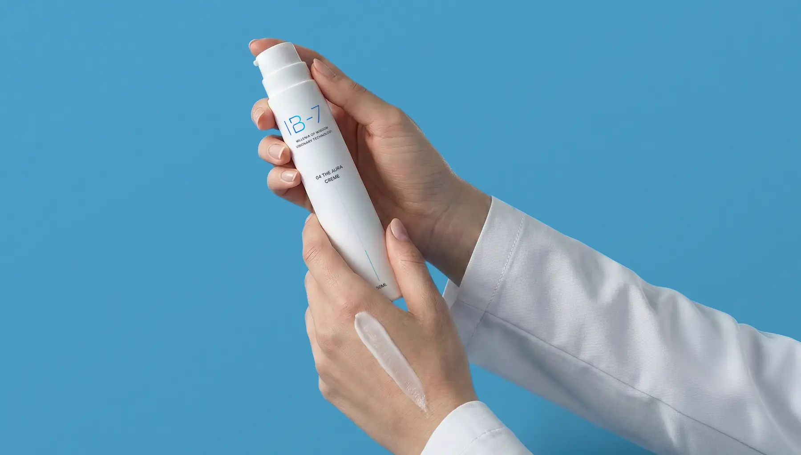

Belege statt Versprechen.
Bewertungen kann man kaufen. Prüfberichte nicht.
- 01 /Irritationspotenzial 0,00
- 02 /Stabilität 3 Monate
- 03 /pH 5,3 bis 5,4
- 04 /Konservierung Kriterium A
Drei Prüfungen
Verträglich
Patch-Test mit 25 Proband:innen über 72 Stunden, von einer Dermatologin freigegeben: Irritationspotenzial 0,00. Für THE PULSE und THE AURA.
Stabil
Stabilität über 3 Monate bestätigt, pH stabil bei 5,3 bis 5,4, Konservierung nach Kriterium A (Konservierungsbelastungstest).
Geschützt
Airless-Dispenser, blickdicht. Kein Sauerstoff, keine Finger, fast vollständige Restentleerung. Die Formel bleibt so, wie sie berechnet wurde.
Warum die Verpackung Teil der Formel ist.
Der Kolben schiebt von unten. Es kommt keine Luft in die Flasche. Beleg: Verpackung
Jeder Pumpstoß ist die Menge, mit der gerechnet wurde. Beleg: Hersteller
Geschlossen und blickdicht. Empfindliche Wirkstoffe bleiben geschützt. Beleg: Stabilität
Der Kolben fährt bis oben, fast vollständig leer. 50 ml, wo die Kategorie 30 ml gibt. Beleg: Verpackung
¹ Rechenbasis: 50 ml, 2 Pumpstöße täglich, 168 Anwendungen, ca. 12 Wochen. Die tatsächliche Nutzung kann abweichen.
Was wir belegen können.
Und was wir deshalb nicht behaupten. Fehlt der Beleg, bleibt der Eintrag weg. Berichte werden hier verlinkt, sobald die Institute sie freigegeben haben.
Verträglichkeit
- Prüfinstitut PLATZHALTER · Patch-Test, 25 Proband:innen, 72 Stunden, Irritationspotenzial 0,00, von einer Dermatologin freigegeben. Bericht (PDF)
Stabilität und Sicherheit
- Labor PLATZHALTER · Stabilitätstest, 3 Monate, pH stabil bei 5,3 bis 5,4. Bericht
- Labor PLATZHALTER · Konservierungsbelastungstest, Kriterium A. Bericht
Verpackung und Deklaration
- Herstellerangabe PLATZHALTER · Airless-Dispenser, 50 ml, kein Sauerstoff, keine Finger, fast vollständige Restentleerung. Wie er funktioniert
- IB-7 Beauty Tech GmbH · INCI-Deklaration, jede Zutat gelistet, auch Duft und Silikone in THE AURA. Zu den Inhaltsstoffen
Wirkstoff-Quellen
- Quellenliste PLATZHALTER · Studien zu den Wirkstoffen, jede Aussage bis zur Primärquelle, Einträge erst mit echtem Beleg. So entsteht IB-7
Reinheit über Präzision.
Nicht durch Weglassen, sondern durch genaues Rechnen und offene Angaben.
Herkunft
Entwickelt in Austria von der IB-7 Beauty Tech GmbH.
Verpackung und Recycling
Lizenziert über ARA und Grüner Punkt.
Materialangaben und Trennhinweis zum Recycling: PLATZHALTER
Haltbarkeit
6 Monate haltbar ab Öffnen. Ein Dispenser reicht rund 12 Wochen.
Quellen-Prinzip
Jede Aussage lässt sich bis zur Primärquelle zurückverfolgen. Was wir nicht belegen können, behaupten wir nicht.
Tierversuche
Tierversuchsfrei. Weder Rohstoffe noch Produkte werden an Tieren getestet.

Beleg oder Behauptung?
Was bei IB-7 geprüft ist, bleibt bei vielen Versprechen offen.
Zum Perfect Duo
| Merkmal | IB-7 | Versprechen |
|---|---|---|
| Verträglichkeit | Patch-Test 0,00 | Behauptet |
| Stabilität | 3 Monate | Unklar |
| pH-Wert | 5,3 bis 5,4 | Nicht genannt |
| Konservierung | Kriterium A | Nicht genannt |
| Verpackung | Airless, 50 ml | Offener Tiegel |
| IB-7 |
Prinzip-Vergleich ohne Fremdmarken. Berichte siehe oben.
Testen, ohne Risiko.
Geöffnet testen. Sonst Geld zurück.
Überzeugt dich das Ritual nicht, schickst du es zurück, auch benutzt, und bekommst dein Geld zurück. Ohne Begründung.